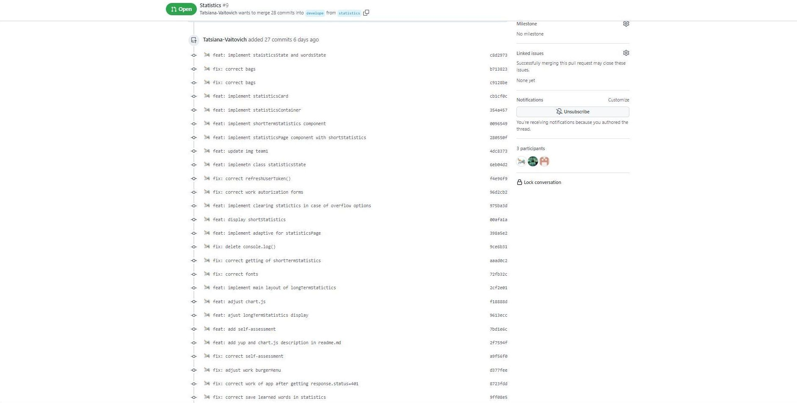

RS-Lang
Демонстрация работы приложения
Demo
Deploy
Организация командной работы
RACI матрица
Инструменты для организации командной работы
Trello board
Discord сервер
Особенности технической реализации проекта
История коммитов
Pull Request
Библиотеки, фреймворки, технологии, задействованные в процессе разработки

#### В процессе разработки задействованы библиотеки, фреймворки, технологии: * **SCSS**: синтаксис препроцессора SASS. Позволяет ускорить процесс написания стилей за счет использования таких возможностей как вложенность, миксины, переменные, импорт, функции и другие. В отличие от оригинального синтаксиса SASS имеет более привычный вид, схожий с обычным css. Полностью принимает стандартный CSS. * **webpack**: статический модульный сборщик для приложений на JavaScript.Позволяют упаковывать, компилировать и организовывать все ресурсы, необходимые для проекта. Модульная система позволяет добиться лучшей организации проекта, так как он разбивается на небольшие части. * **TypeScript**: язык программирования, средство разработки веб-проложений, расширяющее возможности JavaScript. TypeScript является обратно совместимым с JavaScript и компилируется в последний.После компиляции программу на TypeScript можно выполнять в любом современном браузере или использовать совместно с серверной платформой Node.js. TypeScript отличается от JavaScript возможностью явного статического назначения типов, поддержкой использования полноценных классов, поддержкой подключения модулей, что призвано повысить скорость разработки, облегчить читаемость, рефакторинг и повторное использование кода, помочь осуществлять поиск ошибок на этапе разработки и компиляции, и, возможно, ускорить выполнение программ. * **Prettier**: инструмент разработки обеспечивает согласованность кода и может форматировать его автоматически. Нацелен на использование жёстко заданных правил по оформлению программ. Обеспечивает единство форматирования кода, что особенно актуально при командной разработке. * **ESLint**: гибкий и настраиваемый линтер для языка программирования JavaScript. JavaScript - интерпретируемый язык, не имеет этапа компиляции и многие ошибки могут быть обнаружены только во время выполнения. ESLint позволяет находить проблемы в коде, не запуская его. В проекте использована настройка для линтера Airbnb. * **yup**: библиотека для валидации объектов js. Используется в проекте для валидации полей форм регистрации и авторизации. Использование yup упрощает процесс валидации, обработки ошибок и вывода кастомных сообщений о них. * **chart.js**: библиотека для создания графиков и диаграмм. Библиотека простая и гибкая. Позволяет просто настроить визуализацию данных, снабдить графики и диаграммы кастомными стилями и анимацией, они адаптивны при работе в сети.
Спасибо за внимание!